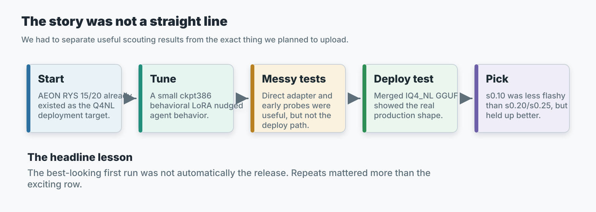
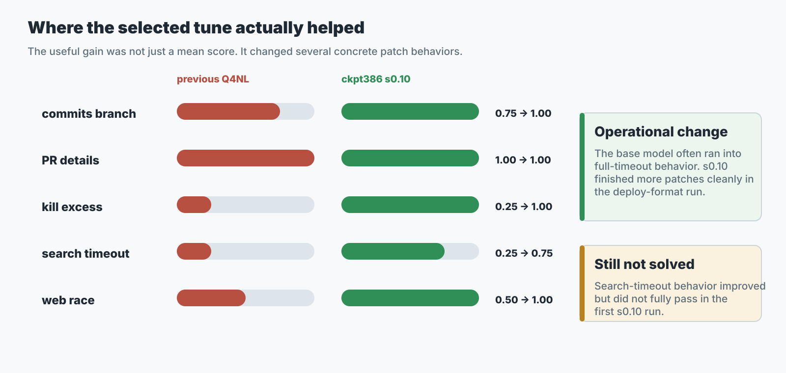
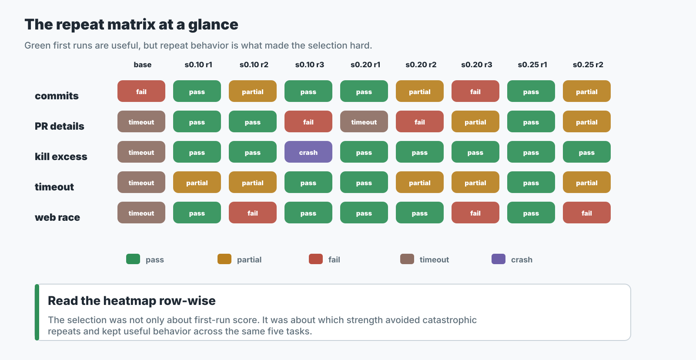
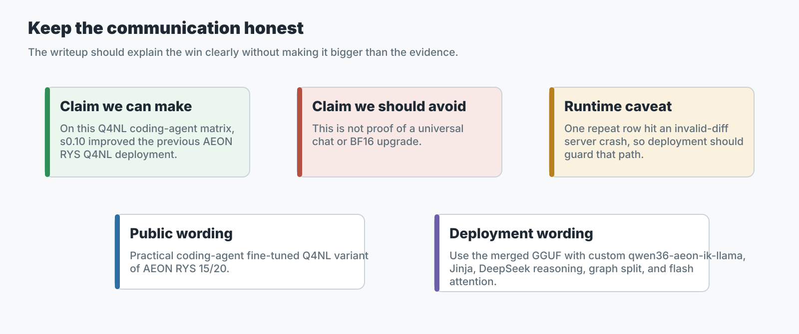

The Short Claim
SignalLatch is a small behavior fine-tune merged into the already released Qwen3.6 AEON RYS 15/20 model line. The selected public artifact is a merged IQ4_NL GGUF file, not a live LoRA adapter.
Most accurate one-sentence read: on our practical Q4_NL coding-agent matrix, the selected ckpt386 s0.10 merged GGUF improved the previous AEON RYS Q4_NL baseline from 1/5, mean 0.550, to 4/5, mean 0.950 on the first deploy-format run, and was the most defensible upload default after the repeat runs we performed.
What this supports
A narrow claim: ckpt386 at strength 0.10 improved practical coding-agent behavior in the tested merged IQ4_NL deployment path.
What this does not prove
It does not prove a universal benchmark win, a solved coding agent, a stock llama.cpp target, or that live LoRA serving is the recommended path.
Why we fine-tuned it
The base AEON RYS 15/20 Q4_NL release was already a practical small-form-factor model. The fine-tune goal was narrower: improve coding-agent behavior on repo-shaped tasks where the model has to review context, apply a targeted patch, respect tool-shaped instructions, and finish cleanly instead of drifting into stalled or over-broad work.
The training target was a behavior loop, not a new knowledge domain. The name SignalLatch refers to the behavior we wanted to promote: review the available signal, align to the actual goal and constraints, latch onto concrete tool/command evidence, repair the specific issue, and confirm through validation.
Behavior Loop

What exactly was trained
The adapter was trained against the AEON RYS 15/20 HF-format base. The resulting release is not another RYS layer surgery pass; it is a behavior LoRA merged into the existing AEON RYS 15/20 model and then exported to the practical GGUF target.
| Item | Value | Why it matters |
|---|---|---|
| Base model line | Qwen3.6-27B-AEON-RYS-15-20 | The non-finetuned RYS model this behavior merge was built from. |
| Upstream source line | AEON-7/Qwen3.6-27B-AEON-Ultimate-Uncensored | The AEON source family used before the RYS 15/20 base was made. |
| Public base release | AEON RYS 15/20 GGUF | Existing small-form-factor Q4_NL deployment target. |
| Final checkpoint | checkpoint-386 | Final checkpoint from the completed one-epoch run. |
| Training completion | global_step=386, epoch=1.0, max_steps=386 | The adapter was not an interrupted midpoint chosen by accident. |
| PEFT type | LORA | Small adapter merged into the base before release. |
| Rank / alpha / dropout | r=8, alpha=32, dropout=0.05 | Low-rank behavior adapter rather than full model retraining. |
| Bias / task type | bias=none, CAUSAL_LM | Standard causal-language-model LoRA setup. |
| Target modules | q_proj, k_proj, v_proj, o_proj, gate_proj, up_proj, down_proj, out_proj, in_proj_qkv, in_proj_a, in_proj_b, in_proj_z | Covers the relevant attention, MLP, and Qwen3.6 hybrid projection surfaces used by this model line. |
Training data shape
The raw training dataset is not published with this release, so this page records the shape and supervision method rather than asking readers to trust a private file path.
| Data fact | Value | Interpretation |
|---|---|---|
| Internal dataset filename | qwen36_behavioral_ms_swift_train.jsonl | OpenAI-style message rows normalized for local training. |
| Rows | 10,800 | Behavior-tuning scale, not broad corpus scale. |
| File size | 17,854,170 bytes | About 18 MB on disk. |
| Role counts | system=10800, user=10800, assistant=34717, tool=23917 | Data emphasizes assistant/tool-loop behavior. |
| Message-count distribution | 3-message=3200, 7-message=2149, 9-message=2185, 11-message=3266 | Mix of simple one-turn rows and multi-step tool-loop rows. |
| Rows without tool messages | 3200 | Not every row was tool-using; some were direct behavior examples. |
| Tokenized length stats | kept=10800, dropped=0, mean 323.68, std 98.60, min 113, max 602, max length 640 | All rows fit the training length budget. |
| Preprocessing | OpenAI-style messages normalized to messages JSONL; tool_response became tool; tool outputs were JSON-wrapped; extra metadata was stripped. | Kept the training signal centered on conversation/tool behavior. |
| Supervision | Only assistant tokens were trained; system, user, and tool tokens were masked. | The adapter learned assistant behavior, not to imitate tool output. |
Training method
| Method fact | Value |
|---|---|
| Trainer | Local Hugging Face Transformers + PEFT training script over MS-Swift-style messages data; not a stock MS-Swift CLI run. |
| Precision | BF16 |
| Trainable parameters | 62,880,000 / 28,853,208,480, about 0.2179% |
| Learning rate / schedule | 5e-5, cosine schedule, warmup 0 |
| Optimizer / regularization | adamw_torch_fused, weight decay 0 |
| Batch shape | 7 GPUs, per-device batch 2, gradient accumulation 2, effective update batch 28 |
| Training stack | Torch 2.11.0+cu128, CUDA 12.8, Transformers 5.6.2, PEFT 0.19.1, DeepSpeed 0.18.9, datasets 3.6.0 |
| Hardware used | Six RTX 5060 Ti GPUs plus one RTX 5090. |
| Checkpoint selection | No in-training eval split selected the release. Downstream practical evals selected checkpoint 386 at merge strength 0.10. |
The important public point is that the adapter was small, behavior-focused, trained on the AEON RYS 15/20 base, and selected only after testing the merged Q4_NL deployment format. This page does not claim the private training data is released.
Why merged GGUF, not live LoRA?
The final serving target uses the custom AEON ik-llama fork with graph split and flash attention. In this setup, live/native LoRA serving was not the stable deployment path we wanted to publish. The long-term release path became: merge the adapter into the model first, then export and quantize the merged model into the final GGUF file.
Scouting path
Direct adapter and BF16 checks helped us learn whether checkpoints and strengths had useful behavior. Those results were useful, but not the final deployment evidence.
Release path
The public artifact is a full merged IQ4_NL GGUF served through the custom runtime. That is the path used for the final selection matrix.

Artifact lineage
AEON RYS 15/20 HF base
-> ckpt386 behavior LoRA
-> merge at scale 0.10 in BF16
-> BF16 GGUF
-> IQ4_NL GGUF release file| Public artifact | Size | SHA256 | Role |
|---|---|---|---|
Qwen3.6-27B-AEON-RYS-SignalLatch-ckpt386-s010-IQ4_NL.gguf | 16,554,833,600 bytes | d70ac4931efb496511f15242381ce241435f207f48b71d0c9b7ac756407c7ef8 | Main deployment artifact. |
Qwen3.6-27B-AEON-RYS-SignalLatch-ckpt386-s010-BF16.gguf | 57,597,296,000 bytes | 2a14f7173979509b5075fabc31b18eacd693d2c17fdec5db8fae00f758353992 | Source-quality exploration artifact. |
Artifact naming note: some internal notes used an -imatrix suffix for the selected IQ4_NL export. The public Hugging Face filename drops that internal suffix. The released Qwen3.6-27B-AEON-RYS-SignalLatch-ckpt386-s010-IQ4_NL.gguf is the selected imatrix-assisted IQ4_NL export, not a separate non-imatrix artifact.
Testing Journey
The testing was not a single clean benchmark. It was an engineering selection process. We started with small behavior checks and practical app-building probes, then moved toward the exact merged Q4_NL format we intended to release.
Early behavior probes
In the first response-style checkpoint eval, the raw checkpoints did not beat the base. This looked discouraging, but it was a scouting lane, not the final merged-GGUF serving path.
| Candidate | Mean | Read |
|---|---|---|
| base | 0.6333 | Strongest in that early probe format. |
| ckpt245 | 0.1167 | Weak. |
| ckpt280 | 0.1667 | Weak. |
| ckpt300 | 0.1250 | Weak. |
| ckpt350 | 0.1667 | Weak. |
| ckpt385 | 0.2083 | Weak. |
| ckpt386 | 0.2417 | Weak, but best checkpoint in that group. |
Early strength sweep
The next useful pattern was clear: full-strength LoRA was too aggressive. Lower strengths produced more useful behavior and longer, more complete outputs.
| Candidate | Mean | Min | Avg output tokens | Read |
|---|---|---|---|---|
ckpt350 s0.25 | 0.7000 | 0.5000 | 406.8 | Best early behavior sweep point. |
ckpt386 s0.25 | 0.6375 | 0.2500 | 406.8 | Close second. |
ckpt350 s0.50 | 0.4750 | 0.2500 | 132.5 | Weaker. |
ckpt386 s0.50 | 0.4750 | 0.2500 | 134.8 | Weaker. |
ckpt350 s0.75 | 0.1750 | 0.0000 | 87.8 | Too strong. |
ckpt386 s0.75 | 0.1750 | 0.0000 | 72.5 | Too strong. |
ckpt350 s1.00 | 0.1250 | 0.0000 | 74.2 | Too strong. |
ckpt386 s1.00 | 0.1750 | 0.0000 | 74.5 | Too strong. |
First exhaustive canvas matrix
The first practical canvas matrix tested all 36 combinations across checkpoints 210, 245, 250, 280, 300, 315, 350, 385, 386 and strengths 0.25, 0.50, 0.75, 1.00. No variant passed in that path. The distribution was:
| Result group | Count | Read |
|---|---|---|
Score 0.625, timeout after 480s | 15 | Partial first-file scaffolding; index.html existed, but no full app. |
Score 0.0417 | 21 | Eight early false-success empty workspaces plus thirteen timeouts with no useful deliverables. |
Runs with styles.css or app.js | 0 | The direct path was not producing complete apps. |
The conclusion was not "the LoRA cannot work." The better conclusion was that the direct adapter/runtime path was not stable enough to judge the deployment artifact.
Merged BF16 GGUF canvas check
After merging the finalists into full GGUF models, the same practical canvas task changed the picture.
| Variant | Format | Verifier | Read |
|---|---|---|---|
ckpt350 s0.25 | merged BF16 GGUF | 0.9167, pass | Passed with one minor layer-model heuristic miss. |
ckpt386 s0.25 | merged BF16 GGUF | 1.0000, pass | Full practical canvas pass. |
That result corrected the earlier negative read: the LoRA was useful when merged and served through the GGUF path.
The Deploy-Format Q4_NL Matrix
The final selection needed to answer one question: what should we actually upload and recommend? For that, we tested checkpoint 386 as merged IQ4_NL GGUF files across smaller strengths.
| Merge strength | Public interpretation |
|---|---|
s0.05 | Very light behavior merge, still weak in first deploy sweep. |
s0.075 | Strong first run but missed web-race and kill-excess patterns. |
s0.10 | Selected default after repeat checks. |
s0.125 | Weaker first sweep than nearby candidates. |
s0.15 | Decent, but not the most defensible default. |
s0.20 | Perfect first run, degraded across repeats. |
s0.25 | Perfect first run, collapsed on repeat. |
Each tested IQ4_NL file was approximately 16,554,833,600 bytes. The exact release file was renamed for public clarity as:
Qwen3.6-27B-AEON-RYS-SignalLatch-ckpt386-s010-IQ4_NL.ggufFive practical code-agent patch tasks
The matrix used small but concrete repo-editing tasks with verifier checks. These were not broad public benchmarks; they were production-style checks for tool discipline, targeted fixes, and patch completion.
| Task | What it tested |
|---|---|
github_mcp_commits_fix_repeat | Branch handling, schema update, request parameter use, docs mention, build. |
github_mcp_pr_details_fix | Using the PR detail endpoint instead of list fields for additions, deletions, and changed files. |
local_search_kill_excess_fix | Targeted process cleanup instead of broad kill behavior. |
local_search_search_timeout_fix | Carrying timeout through schema, handler, and backend call. |
local_search_web_search_race_fix | First-success race behavior instead of waiting for all engines. |
Scoring method
- Each task had a verifier that assigned a fractional score from
0.0to1.0. - A strict pass only counted when the verifier marked
pass=True. - Timeout-like runs were tracked separately because stalled completion behavior matters for agent deployment.
- First-run results were not enough for selection; finalist strengths were repeated on the same five-task matrix.
Strength Selection
The first deploy-format sweep proved the LoRA helped, but it also showed why a one-run perfect score was not enough.
| Candidate | Pass | Mean | Elapsed | Timeout-ish | Read |
|---|---|---|---|---|---|
| base Q4_NL | 1/5 | 0.550 | 2660s | 4 | Weak baseline for this matrix. |
ckpt386 s0.05 | 2/5 | 0.600 | 2418s | 3 | Still weak. |
ckpt386 s0.075 | 3/5 | 0.900 | 1638s | 0 | Strong but missed web-race and kill-excess patterns. |
ckpt386 s0.10 | 4/5 | 0.950 | 1106s | 0 | Best stable-looking first run. |
ckpt386 s0.125 | 2/5 | 0.775 | 1190s | 0 | Weaker. |
ckpt386 s0.15 | 3/5 | 0.875 | 1186s | 0 | Decent, not best. |
ckpt386 s0.20 | 5/5 | 1.000 | 1568s | 1 | Perfect score, but PR-details hit full timeout. |
ckpt386 s0.25 first | 5/5 | 1.000 | 1328s | 0 | Perfect first score. |
ckpt386 s0.25 repeat | 1/5 | 0.750 | 1343s | 0 | Did not reproduce. |

Task-level base versus selected s0.10
| Task | Base AEON RYS Q4_NL | ckpt386 s0.10 IQ4_NL | Read |
|---|---|---|---|
| commits branch fix | 0.75, fail, 260s | 1.00, pass, 311s | Fixed branch/schema/request behavior. |
| PR details fix | 1.00, pass, 600s timeout | 1.00, pass, 271s | Both passed, but s0.10 completed much cleaner. |
| kill excess process fix | 0.25, fail, 600s timeout | 1.00, pass, 126s | Large improvement. |
| search timeout fix | 0.25, fail, 600s timeout | 0.75, fail, 256s | Partial improvement; handler still missed passthrough. |
| web search race fix | 0.50, fail, 600s timeout | 1.00, pass, 142s | Large improvement. |

Repeat stability
After s0.20 and s0.25 produced perfect first runs, the finalists were repeated. That is where the selection changed.
| Candidate | Runs | Strict pass | Strict mean | Decision read |
|---|---|---|---|---|
ckpt386 s0.10 | 3 | 9/15 | 0.842 | Best default candidate after repeats. |
ckpt386 s0.10 crash-adjusted | 3 | 9/14 | 0.884 | Excludes one invalid runtime/server-crash task. |
ckpt386 s0.20 | 3 | 8/15 | 0.850 | Degraded after its perfect first run. |
ckpt386 s0.25 | 2 | 6/10 | 0.875 | First 5/5 collapsed to 1/5 on repeat. |

Practical Canvas-Agent Test
We also tested the release candidate on a larger practical app task: build an isolated Krita-like raster canvas application with layers, brush and eraser, transforms, opacity, and a local-only AI image generation stub. The AI hook did not need to call a real Sloane service; it was a practical agent-completion test.
| Shared harness setting | Value |
|---|---|
| Endpoint | custom ik-llama llama-server through an OpenAI-compatible agent harness |
| Temperature | 0.7 |
| Context | 131072 |
| KV cache for this test | -ctk f32 -ctv f32, used as conservative isolation against KV precision questions |
| Attention and split | -fa on, -sm graph |
| Chat formatting | --jinja, --reasoning-format deepseek |
| Agent cap | CLAW_MAX_TOKENS=1800, TIMEOUT_SECONDS=900 |
| Run | RC | Time | Verifier | Notes |
|---|---|---|---|---|
| AEON RYS IQ4_NL attempt 1 | 1 | 337s | 0.0417 / false | Failed before usable files due to invalid tool/diff behavior while writing CSS/app JS. |
| AEON RYS IQ4_NL retry 1 | 0 | 803s | 1.0 / true | Clean retry after the first formatting failure. |
| SignalLatch IQ4_NL | 0 | 802s | 1.0 / true | Clean completion from the selected release candidate. |
| Unsloth IQ4_NL | 0 | 826s | 1.0 / true | Clean pass for the external Q4-family comparison. |
| Unsloth Q8_0 | 124 | 900s | 1.0 / true | Produced complete verified files but timed out during final agent wrap-up. |
The canvas test is not a broad benchmark. It is useful because it exposed formatting reliability, timeout behavior, and whether a compressed model could still finish a real multi-file tool-style task.
Runtime Profile Used for Selection
The selected public runtime is the custom AEON ik-llama fork. The fine-tuned GGUF should be treated as an artifact for that fork, not as a stock llama.cpp compatibility claim.
./build/bin/llama-server \
-m /path/to/Qwen3.6-27B-AEON-RYS-SignalLatch-ckpt386-s010-IQ4_NL.gguf \
-c 65536 \
-ngl 999 \
-np 1 \
-fa on \
-sm graph \
--temp 0.7 \
--jinja \
--reasoning-format deepseek \
--reasoning-budget 0 \
-cram 0 \
--ctx-checkpoints 0For the 131k canvas comparison, the same shape was used with a larger context and FP32 KV as an isolation setting:
-c 131072 \
-ctk f32 \
-ctv f32Practical single-GPU deployment: the SignalLatch Q4_NL release is small enough for practical single-GPU use. In an observed 24 GB-class GPU reference profile, roughly 160k context with default/FP16 KV fit at about 20.3 GiB total VRAM on an RTX 3090-class card. Treat this as a deployment reference point, not a guaranteed memory benchmark.
Recommended file
Qwen3.6-27B-AEON-RYS-SignalLatch-ckpt386-s010-IQ4_NL.gguf
Exploration file
Qwen3.6-27B-AEON-RYS-SignalLatch-ckpt386-s010-BF16.gguf exists for inspection, re-quantization, or continued work, not normal inference.
Tested runtime boundary: use the public qwen36-aeon-ik-llama fork, with SignalLatch support documented in the fork history at commit f0910a49 and later docs commits on top. Do not read this as support for arbitrary upstream llama.cpp or for live LoRA loading with the public serving profile.
Caveats and Boundaries
What we are comfortable saying
- The merged Q4_NL LoRA path improved over the previous AEON RYS Q4_NL baseline on the five-task practical matrix.
- The useful merge strength was low. Full-strength LoRA was too aggressive in early probes.
- The merged GGUF path is the right path to judge for this release.
- s0.10 is the selected default among the tested strengths because it balanced improvement and repeat stability.
What we are not claiming
- We are not claiming the fine-tune is better for all tasks or all users.
- We are not claiming BF16 benchmark dominance.
- We are not claiming s0.10 is globally optimal.
- We are not claiming stock llama.cpp compatibility.
- We are not recommending live LoRA loading for the public serving profile.
One s0.10 repeat3 row was treated as a runtime/server stability incident. The task scored 0.25, but the agent failed immediately after API retries and the server log showed std::runtime_error with Invalid diff. Strict scoring still counts the failed row, but the selection notes separate it from normal model-output misses.

Evidence Included on This Page
This page intentionally embeds the relevant numbers rather than relying on local workspaces. The public evidence bundle in this directory remains useful for audit trails, but readers should not need private paths to understand the decision.
| Evidence topic | Numbers included here |
|---|---|
| Training shape | Example count, checkpoint, epoch, LoRA config, target modules. |
| Early probes | Checkpoint means and lower-strength behavior sweep table. |
| Direct canvas failure | 36-combination direct-path distribution and failure read. |
| Merged GGUF correction | ckpt350 s0.25 and ckpt386 s0.25 BF16 GGUF canvas pass scores. |
| Deploy Q4_NL matrix | All first sweep strengths, pass counts, means, elapsed, timeout-ish rows. |
| Selected s0.10 comparison | Task-level base versus s0.10 scores and elapsed times. |
| Repeat stability | s0.10, s0.20, s0.25 strict and crash-adjusted comparison. |
| Canvas comparison | SignalLatch, base AEON RYS, Unsloth IQ4_NL, and Unsloth Q8_0 results. |